Link naar pagina: https://provincie-noord-holland.dataplatform.nl/#/data/ef7bc793-b572-43e4-a8ba-4826d543fcc3 Geen nieuwe bevindingen.
Samenvatting
In deze volledige audit zijn zeven kaartenwebsites onderzocht. Deze sites staan op eigen domeinen, bestaan grotendeels uit kaarten en kaartapplicaties en zijn veelal gebaseerd op ArcGIS-software. De pagina’s vertonen onderling veel overeenkomsten. Voor dit onderzoek hebben we een steekproef samengesteld van de meest uiteenlopende paginatemplates en content, zodat we een zo breed mogelijk beeld kregen van de toegankelijkheidsproblemen. Daarom is gekozen voor een volledige audit in plaats van een contentaudit. Het techniekonderzoek van ArcGIS kan als aanvullend rapport worden opgenomen in de toegankelijkheidsverklaring. Op dit moment zijn 34 van de 55 succescriteria als voldoende beoordeeld. In dit rapport lees je wat er bij de overige 21 nog fout gaat, en hoe je dat kunt verbeteren.
In opdracht van

-
Voldoet
-
Afgekeurd
55
Totaal
- voldoet
Impact
Klein: 0
Medium: 0
Groot: 0
Type
Content: 0
Techniek: 0
Waarneembaar
- van 20
Bedienbaar
- van 20
Begrijpelijk
- van 13
Robuust
- van 2
Deze SC zijn afgekeurd:
Over dit onderzoek
- Onderzocht door
- Proper Access
- In opdracht van
- provincie Noord-Holland
- Leverancier techniek
- Arcgis
- Datum rapport
- 19 november 2025
- Standaard
- WCAG 2.2
- Methodologie
- WCAG-EM
Scope van het onderzoek
- Alle pagina's op de website geoapps.noord-holland.nl
- Alle pagina's op de website wonen-noord-holland.hub.arcgis.com
- Alle pagina's op de website pplg-noord-holland.hub.arcgis.com
- Alle pagina's op de website energietransitie-noord-holland.hub.arcgis.com
- Alle pagina's op de website provincie-noord-holland.dataplatform.nl
- Alle pagina's op de website apps.vertigisstudio.eu/web/?app=731375317f8b467da75e5666f49bd884
- Alle PDF's op de website energietransitie-nh.incijfers.nl
Buiten scope:
- Subwebsite(s) waarbij de HTML en/of het systeem afwijkt van de onderzochte website
- De van derden afkomstige inhoud (wettelijke uitzondering voor de overheid)
- Kaarten en kaartapplicaties (wettelijke uitzondering voor de overheid)
Basisniveau toegankelijkheidsondersteuning
- Mozilla Firefox, versie 142
- Google Chrome, versie 142
- Apple Safari, versie 18
- PAC software to test PDF
- NVDA schermlezer in combinatie met Firefox
- VoiceOver schermlezer in combinatie met Safari
- Andere gangbare browsers en hulpapparatuur
Technologieën van de website
- HTML
- CSS
- JavaScript
- WAI-ARIA
- SVG
Voortgang opgeloste bevindingen
Samenwerken met je team
Exporteer alle bevindingen als CSV-bestand. Je kunt het in een (online) spreadsheet inladen om met je team samen te werken.
Importeer in Jira
Exporteer alle bevindingen als Jira-compatibel CSV-bestand. Je kunt het direct importeren via Jira > Issues > Import issues from CSV.
Zelf bijhouden in de browser
Houd per bevinding bij of het is opgelost. Je voortgang wordt opgeslagen in jouw browser. Niemand anders kan je resultaat zien.
0 van
0 opgelost
Gevonden problemen
Filter bevindingen op:
Impact:
Type:
Status:
Geen bevindingen gevonden voor dit filter.
Link naar pagina: https://energietransitie-nh.incijfers.nl/mosaic/klimaat-en-energie
#1 - Kleurcontrast van tekst is te laag (tekst kleiner dan 24px en niet vetgedrukt)
Op deze pagina staat lichtblauwe tekst (#2991E0), bijvoorbeeld “Noord-Hollandse Klimaataanpak”, op een witte achtergrond. De contrastratio is te laag: 3,4:1.
Hetzelfde probleem doet zich voor op de pagina https://energietransitie-nh.incijfers.nl/mosaic/klimaat-en-energie/kerncijfers en op de pagina https://energietransitie-nh.incijfers.nl/mosaic/klimaat-en-energie/transitiepaden/mobiliteit.
Oplossing:
Deze tekst is kleiner dan 24px en niet vetgedrukt, daarom moet het contrast minimaal 4,5:1 zijn. Op deze pagina staat een instructie die uitlegt hoe je kleurcontrast kunt testen: https://properaccess.nl/hoe-test-ik-kleurcontrast/.
#2 - Links door kleur te onderscheiden van gewone tekst
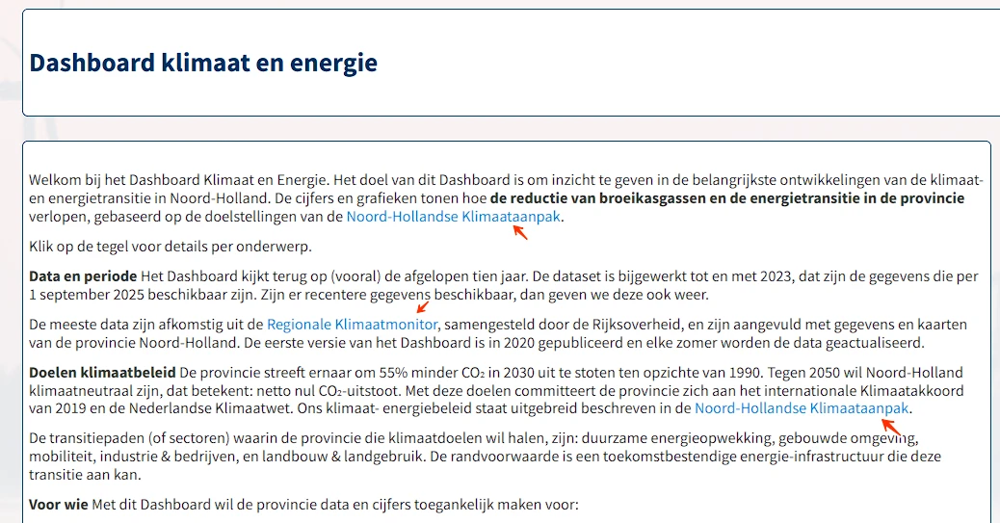
- Onderstrepen: geef de links een onderstreping.
- Rand: voeg een subtiele rand (kader) toe aan de links.
- Verhoogd contrast + hover-effect: verhoog het contrast tussen de kleur van de links en de omringende tekst tot minimaal 3,0:1, en voeg een tweede visuele indicator toe bij hover, zoals een onderstreping of verandering in de achtergrondkleur.
strong-element is gebruikt voor opmaak
Op deze pagina wordt onder "Dashboard klimaat en energie" het strong-element onjuist gebruikt voor opmaakdoeleinden, bijvoorbeeld bij “de reductie van broeikasgassen en de energietransitie in de provincie”. Het strong-element heeft een semantische waarde: het geeft een bepaalde betekenis aan de tekst die erin staat. Dit element geeft aan dat de tekst extra nadruk moet krijgen. Daarom mag dit element niet gebruikt worden om alleen een visueel effect te bereiken (vetgedrukte tekst). Hetzelfde probleem doet zich voor op de pagina https://energietransitie-nh.incijfers.nl/mosaic/klimaat-en-energie/kerncijfers, bijvoorbeeld bij “Hernieuwbare energieproductie”.
Oplossing:
Verwijder de onnodige strong-elementen en gebruik CSS om de tekst vet te maken.
Link naar pagina: https://provincie-noord-holland.dataplatform.nl/#/data
#3 - Taalwisseling ontbreekt op anderstalige content
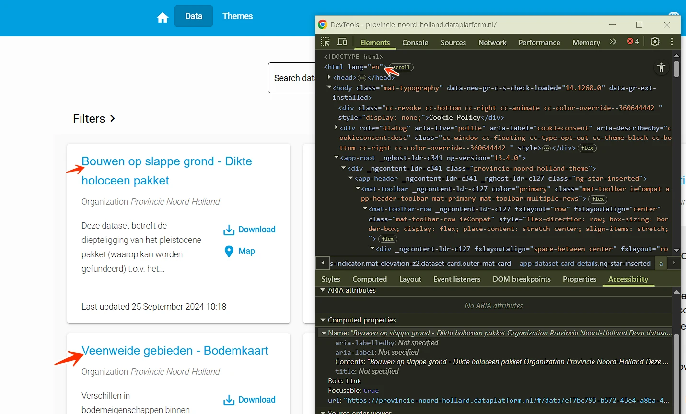
Op deze pagina staat in de cookiebanner een knop met de zichtbare tekst “Decline”. De toegankelijke naam van de knop is “deny cookies”, afkomstig van het aria-label.
Het gebruik van het aria-label-attribuut overschrijft alle andere methoden voor het benoemen van elementen. Schermlezers en spraakherkenningssoftware gebruikt de naam die in het aria-label staat. Dit wordt de “toegankelijke naam” genoemd. Als deze toegankelijke naam anders is dan de zichtbare tekst, zal de tekst die schermlezers voorlezen en die door spraakherkenningssoftware wordt gebruikt, dus afwijken van de zichtbare tekst op de knop. Hierdoor kunnen bezoekers de knop niet meer met stemcommando bedienen. Zij lezen daarvoor namelijk de tekst voor die op de knop te zien is. Omdat deze niet hetzelfde is als de toegankelijke naam, weet de spraaksoftware niet om welke knop het gaat.
Hetzelfde probleem doet zich voor op de pagina https://provincie-noord-holland.dataplatform.nl/#/data/d8b3d41e-104c-4448-8975-e50323d7deb2.
Oplossing:
Zorg dat de toegankelijke naam de zichtbare tekst bevat, en zet deze tekst het liefst vooraan in de naam. De toegankelijke naam mag ook precies hetzelfde zijn als de zichtbare tekst.
#4 - Toetsenbord focus gaat buiten het dialoogvenster
Wanneer je de website voor het eerst bezoekt, verschijnt er een dialoogvenster met een cookiebericht. Op dit moment kan de toetsenbordfocus uit het geopende dialoogvenster ontsnappen en naar de onderliggende pagina verplaatsen. Bij dit soort dialoogvensters moet je de toetsenbordfocus goed instellen. Als het venster actief is, moet de toetsenbordfocus binnen het venster blijven, en mag deze niet op de onderliggende pagina terechtkomen. Hetzelfde probleem doet zich voor op de pagina https://provincie-noord-holland.dataplatform.nl/#/data/d8b3d41e-104c-4448-8975-e50323d7deb2.
Oplossing:
Je lost dit op met Javascript door de focus binnen het venster te houden totdat de bezoeker op de sluitknop heeft geklikt of op de ESC-toets heeft gedrukt. Je kunt er ook voor kiezen om het venster automatisch te sluiten op het moment dat de focus eruit gaat.
#5 - Focus niet meer zichtbaar omdat de cookiebanner bij inzoomen een deel van de pagina bedekt
Wanneer iemand de website voor het eerst bezoekt, verschijnt er een cookiebanner. Als een bezoeker vervolgens inzoomt tot 200% of 400% op een scherm met een resolutie van 1280 bij 1024 pixels, komt de toetsenbordfocus terecht op elementen die onder de banner verborgen zijn. Hierdoor is het niet mogelijk te zien waar de focus zich bevindt. Hetzelfde probleem doet zich voor op de pagina https://provincie-noord-holland.dataplatform.nl/#/data/d8b3d41e-104c-4448-8975-e50323d7deb2.
Oplossing:
Zorg dat de cookiebanner meeschaalt bij inzoomen, zodat de focus zichtbaar is.
#6 - Link heeft geen inhoud
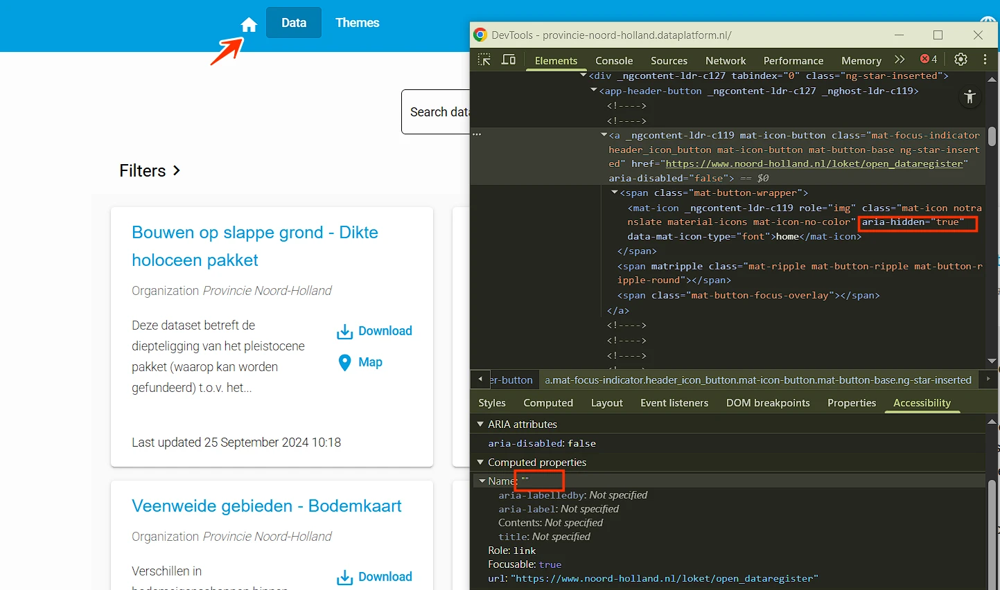
Op deze pagina staat in de header een knop met een wereldbolpictogram. Dit pictogram is verborgen voor de schermlezer. Hetzelfde probleem doet zich voor na het selecteren van een filter, bij de knop met het “x”-pictogram. Schermlezers negeren inhoud met het attribuut aria-hidden="true". Deze inhoud is dus verborgen voor blinde bezoekers. Verwijder dit attribuut zodat een blinde bezoeker dezelfde informatie krijgt als een ziende bezoeker. Dit probleem heeft ook betrekking op succescriterium 4.1.2, omdat de knop geen toegankelijke naam heeft. Hetzelfde probleem doet zich voor op de pagina https://provincie-noord-holland.dataplatform.nl/#/data/d8b3d41e-104c-4448-8975-e50323d7deb2.
Oplossing:
Verwijder aria-hidden="true".
#7 - Huidige pagina alleen visueel aangegeven
In het hoofdmenu heeft de actieve link (naar de huidige pagina) “Data” een afwijkend visueel uiterlijk, maar dit onderscheid is niet aanwezig in de code. Bezoekers die de pagina laten voorlezen, hebben daardoor geen toegang tot deze informatie. Hetzelfde probleem doet zich voor op de pagina https://provincie-noord-holland.dataplatform.nl/#/data/d8b3d41e-104c-4448-8975-e50323d7deb2.
Oplossing:
Zorg voor een andere manier om deze informatie over te dragen, zodat ook slechtziende of blinde bezoekers dit kunnen begrijpen. Voeg bijvoorbeeld aria-current="true" toe aan de actieve link. Andere opties zijn een h1-kop met dezelfde tekst als het menu-item, of het gebruik van de paginatitel (title).
#8 - Knop heeft niet de juiste toegankelijke rol
Op deze pagina staat een zoekveld met een knop met een vergrootglaspictogram. Deze knop heeft niet de juiste toegankelijke rol. Elk HTML-element heeft standaard een rol. Dit betekent dat het element bepaalde eigenschappen en functies heeft om informatie aan de bezoeker te geven of om informatie van de bezoeker te ontvangen. De rol bepaalt dus wat het element doet. Schermlezers en andere hulpmiddelen moeten de correcte rol van elk element op een webpagina kennen. Zo kunnen ze op een slimme manier met het element omgaan en aan de bezoeker uitleggen wat het element doet.
Oplossing:
Zorg dat de knop de juiste toegankelijke rol heeft. Gebruik het button-element.
#9 - Kleurcontrast van tekst is te laag (tekst kleiner dan 19px)
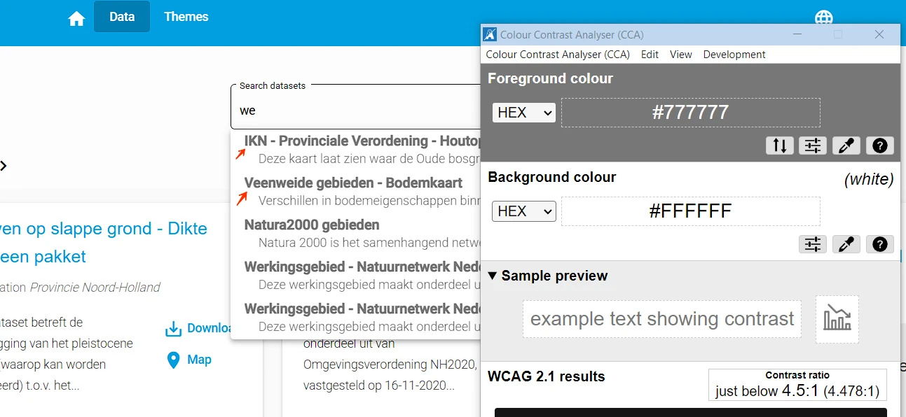
Op deze pagina is in de footer de tekst “Contact” niet opgemaakt als kop. Bezoekers die hulpsoftware gebruiken hebben niets aan een (tussen)kop die er wel uitziet als kop, maar niet als kop is gemarkeerd. Via de koppen op een pagina kunnen gebruikers van hulpsoftware de inhoud scannen of snel naar een bepaalde sectie springen. Maar dat kan alleen als de kop ook echt in de code staat. Als koppen alleen visueel als kop zijn vormgegeven (bijvoorbeeld vetgedrukt), ontstaat bovendien nog een ander probleem: de structuur van de informatie in de code wijkt dan af van de visuele structuur. Op deze pagina staat een instructie hoe je zelf koppen op een webpagina kunt testen: https://properaccess.nl/zo-controleer-je-de-koppenstructuur-van-je-website/. Hetzelfde probleem doet zich voor op de pagina https://provincie-noord-holland.dataplatform.nl/#/data/d8b3d41e-104c-4448-8975-e50323d7deb2.
Oplossing:
Dit voorkom je door koppen altijd te markeren met het juiste HTML-element, op het juiste kopniveau: h1, h2, h3, h4, h5 of h6. Meestal kun je het kopniveau kiezen via de content-editor in je CMS. De HTML-code voor de kop wordt dan automatisch toegepast.
#10 - Toetsenbordfocus is niet zichtbaar
Op deze pagina is de toetsenbordfocus niet zichtbaar op alle links in de zoekresultaten. De toetsenbordfocus moet altijd zichtbaar zijn op interactieve elementen zoals links, knoppen en invoervelden die met het toetsenbord focus kunnen krijgen. Bezoekers die met het toetsenbord navigeren moeten goed kunnen zien op welke plek van de pagina ze zijn. Anders weten ze niet op welk moment ze op Enter moeten drukken om een knop of link te bedienen.
Oplossing:
Zorg dat de toetsenbordfocus zichtbaar is op de genoemde elementen. Op deze pagina staat een instructie om zelf focuszichtbaarheid te testen: https://properaccess.nl/hoe-test-ik-focus-zichtbaarheid/.
#11 - Kleurcontrast van tekst is te laag (tekst kleiner dan 24px en niet vetgedrukt)
Op deze pagina staat lichtblauwe tekst (#009EDF) op een witte achtergrond, bijvoorbeeld “Bouwen op slappe grond - Dikte holoceen pakket”. De contrastratio is te laag: 3:1. Hetzelfde probleem doet zich voor op de pagina https://provincie-noord-holland.dataplatform.nl/#/data/d8b3d41e-104c-4448-8975-e50323d7deb2.
Oplossing:
Deze tekst is kleiner dan 24px en niet vetgedrukt, daarom moet het contrast minimaal 4,5:1 zijn. Op deze pagina staat een instructie die uitlegt hoe je kleurcontrast kunt testen: https://properaccess.nl/hoe-test-ik-kleurcontrast/.
#12 - Knop geeft geen informatie over status
Op deze pagina staat een knop “Filters” die het submenu met filters opent en sluit. De knop geeft geen informatie over de status van het submenu (geopend of gesloten) aan bezoekers die het niet kunnen zien, zoals mensen die schermlezers gebruiken.
Oplossing:
Voeg bijvoorbeeld een tekstuele uitleg toe (ingeklapt/uitgeklapt) die je voor ziende bezoekers met CSS verbergt. Of gebruik het aria-expanded-attribuut. Dit attribuut moet de waarde "true" krijgen als het menu getoond wordt, en “false" als het menu verborgen is.
#13 - Contrast tussen focusindicator en achtergrond is te laag
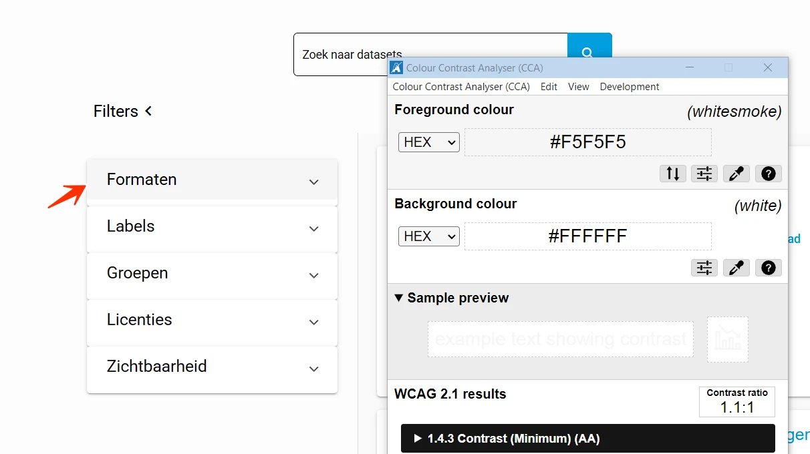
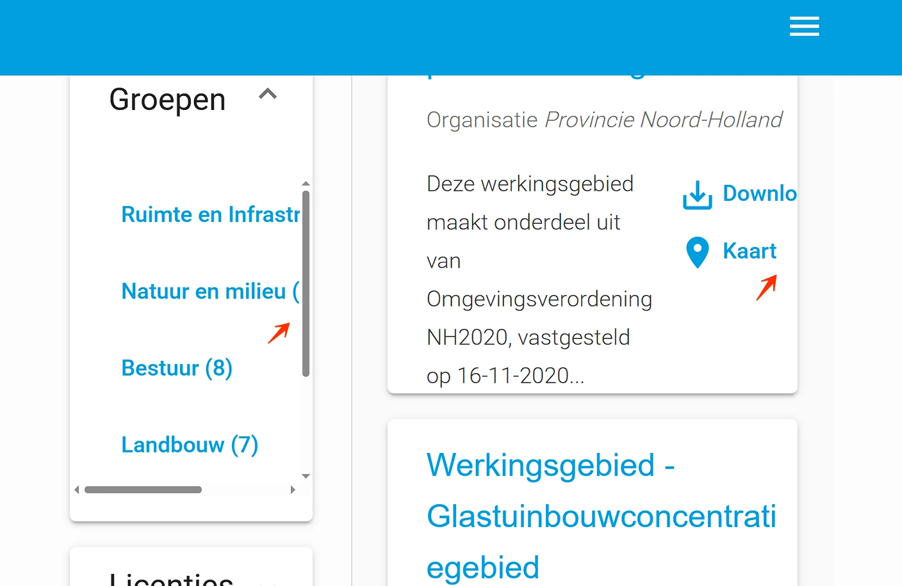
Deze pagina bevat zoekresultaten. Elk resultaat heeft een link “Download” en een link “Kaart”, die knoppen met dezelfde namen bevatten. Dit zorgt voor overbodigheid en kan verwarrend zijn voor gebruikers van schermlezers.
Oplossing:
Dit kan worden opgelost door de geneste knoppen uit de links te verwijderen.
Link naar pagina: https://geoapps.noord-holland.nl/GeoWeb/Viewer/?app=4e0f7c2bc96740129c84a8cbcff3d87d
#14 - Taalcode klopt niet
De primaire taal van deze pagina is Nederlands, maar het lang-attribuut is onjuist ingesteld op "en".
Je moet de primaire taal van de pagina aangeven met de juiste taalcode via het lang-attribuut op het html-element, in dit geval lang="nl". Schermlezers gebruiken deze code om de juiste uitspraakregels toe te passen. Staat hier een verkeerde code, dan wordt de inhoud van de pagina dus met onjuiste uitspraakregels voorgelezen. De voorgelezen tekst is dan erg lastig te begrijpen.
Hetzelfde probleem doet zich voor op pagina https://apps.vertigisstudio.eu/web/?app=731375317f8b467da75e5666f49bd884.
Oplossing:
Stel de taalcode correct in voor elke pagina door lang="nl" te gebruiken.
#15 - Tekstalternatief van het logo is niet voldoende
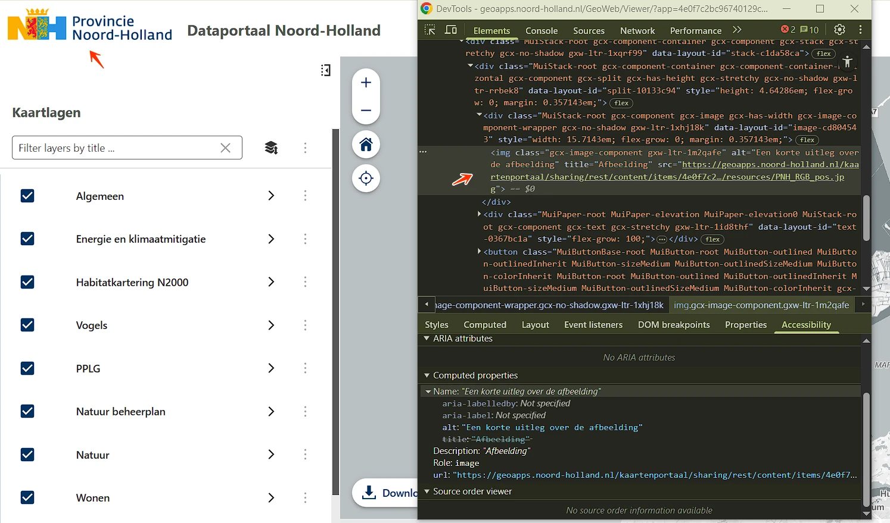
Op deze pagina staan de koppen “Dataportaal Noord-Holland” en “Kaartlagen”. In deze koppen worden het heading-element en het strong-element gebruikt. Het strong-element heeft een semantische waarde. Het geeft een bepaalde betekenis aan de tekst die erin staat, namelijk dat de tekst extra nadruk moet krijgen. Daarom mag je dit element niet gebruiken om alleen een visueel effect te bereiken (vetgedrukt). Hetzelfde probleem doet zich voor bij “Dataportaal” in het dialoogvenster dat wordt geopend na het klikken op de knop met het “i”-icoon. Hetzelfde probleem doet zich ook voor op de pagina https://apps.vertigisstudio.eu/web/?app=731375317f8b467da75e5666f49bd884 bij “Kaartenatlas Noord-Holland” en bij “Status & contact” en “Hoe gebruik ik deze applicatie?” in het dialoogvenster dat wordt geopend na het klikken op de knop met het “i”-icoon, en op de pagina https://energietransitie-nh.incijfers.nl/mosaic/klimaat-en-energie, bijvoorbeeld bij “Transitiepaden” en andere.
Oplossing:
Gebruik CSS om de tekst vetgedrukt te maken, en verwijder het strong-element.
#16 - Naam van de knop beschrijft niet wat de knop doet
Op deze pagina staat op de kaart een knop met een icoontje van een huisje. De toegankelijke naam “Knop” beschrijft de functie niet nauwkeurig. Hetzelfde probleem doet zich voor bij de knop met het “i”-pictogram. Een blinde bezoeker weet daardoor niet wat deze knop precies doet.
Oplossing:
Voeg tekst toe die deze knop goed beschrijft.
#17 - Dialoogvenster heeft niet de juiste rol en geen toegankelijke naam
Op deze pagina staat op de kaart een knop met een “i”-pictogram die een dialoogvenster opent. Dit dialoogvenster heeft geen juiste rol en geen toegankelijke naam. Schermlezers kunnen hierdoor niet doorgeven dat het om een dialoogvenster gaat, en wat de inhoud ervan is.
Oplossing:
Voeg twee attributen toe aan het dialoogvenster: een aria-label met een duidelijke beschrijving van de inhoud (aria-label="Beschrijving van de inhoud") en role="dialog".
#18 - Een element met de rol “tree” heeft directe kindelementen die niet zijn toegestaan: li.
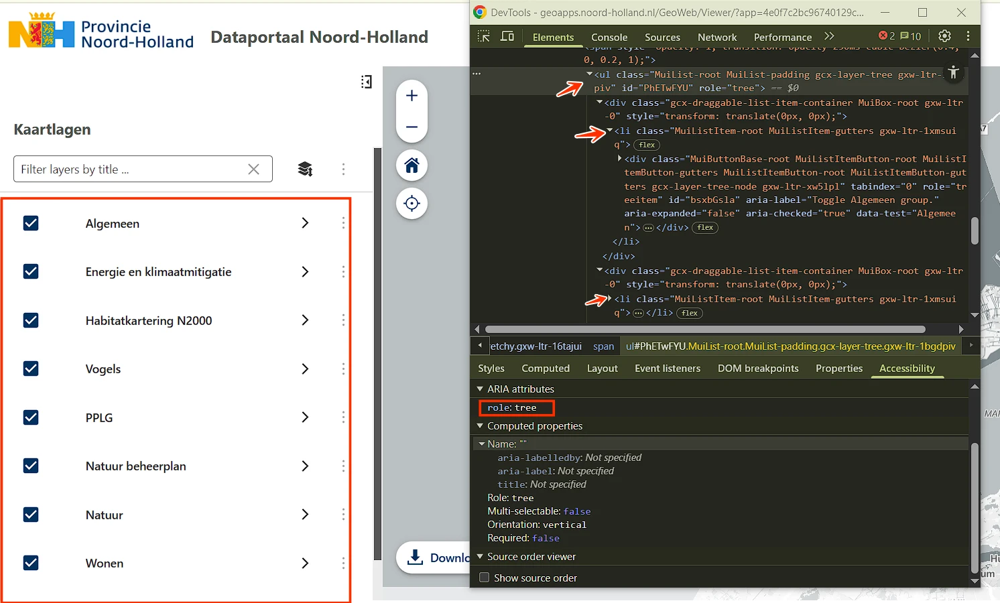
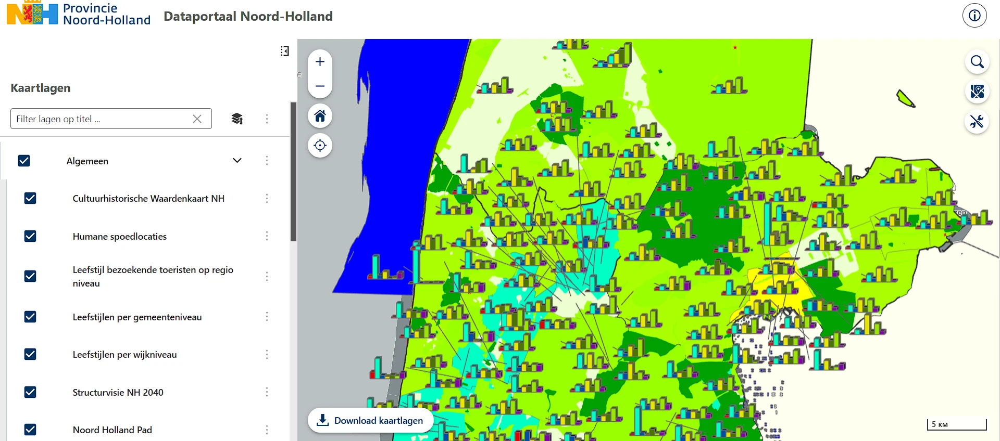
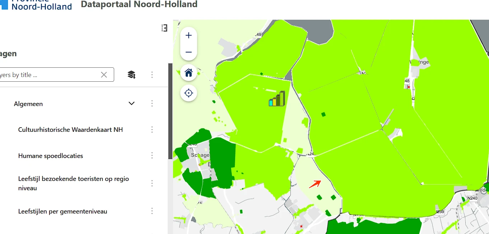
Op deze pagina wordt een modaal dialoogvenster met navigatie-elementen geopend zodra de toetsenbordfocus op de pagina komt. Deze elementen hebben de rol “menuitem”, maar ze hebben geen juiste ouderrol, bijvoorbeeld “menu”.
Dit zorgt ervoor dat hulpsoftware er juist minder goed mee overweg kan. Elementen met de rol menuitem moeten binnen een overkoepelende rol staan, zoals menu, menubar of group. En deze rol ontbreekt. Bovendien hoort bij deze ARIA-rollen een andere toetsenbordbediening. Die kun je toevoegen, maar dan moeten je ook de juiste toetsenbordfuncties instellen. Voor dit eenvoudige menu is dit allemaal niet nodig.
Hetzelfde probleem doet zich voor op de pagina https://apps.vertigisstudio.eu/web/?app=731375317f8b467da75e5666f49bd884.
Oplossing:
Eén oplossing zou zijn om eenvoudig een geneste lijst (ul) met links te gebruiken. Een andere mogelijke oplossing is om de juiste ouderrol “menu” of “menubar” toe te voegen.
Op https://www.w3.org/WAI/ARIA/apg/patterns/menu/ staat wat er nodig is om een toepassing met role="menubar" te bouwen.
#19 - Toetsenbordfocus komt niet in dialoogvenster terecht
Op deze pagina staat op de kaart een knop met een “i”-pictogram die een dialoogvenster opent. Wanneer het dialoogvenster wordt geopend, wordt de toetsenbordfocus echter niet automatisch in het dialoogvenster geplaatst. Bovendien kan de toetsenbordfocus uit het geopende dialoogvenster ontsnappen en naar de onderliggende pagina verplaatsen. Bij dit soort dialoogvensters moet je de toetsenbordfocus goed instellen. Als het venster actief is, moet de toetsenbordfocus binnen het venster blijven, en mag deze niet op de onderliggende pagina terechtkomen.
Oplossing:
Zorg dat de focusvolgorde logisch blijft, door deze naar de nieuwe inhoud te verplaatsen. Houd de focus ook in het venster totdat de bezoeker op de sluitknop of de ESC-toets klikt. Je kunt er ook voor kiezen om het venster automatisch te sluiten wanneer de focus verloren gaat.
#20 - Bezoekers die inzoomen tot 200% en tot 400% kunnen niet meer alle tekst lezen en functies gebruiken
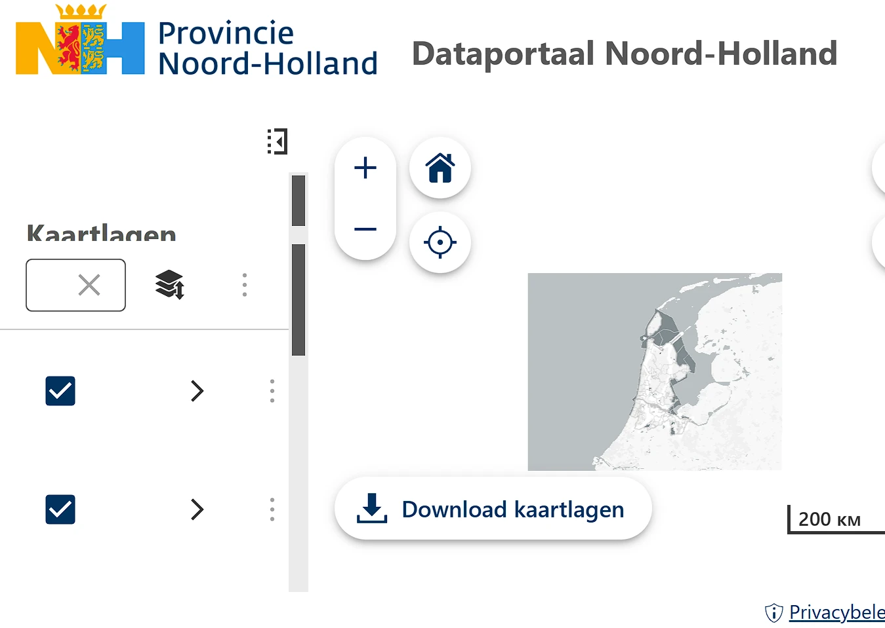
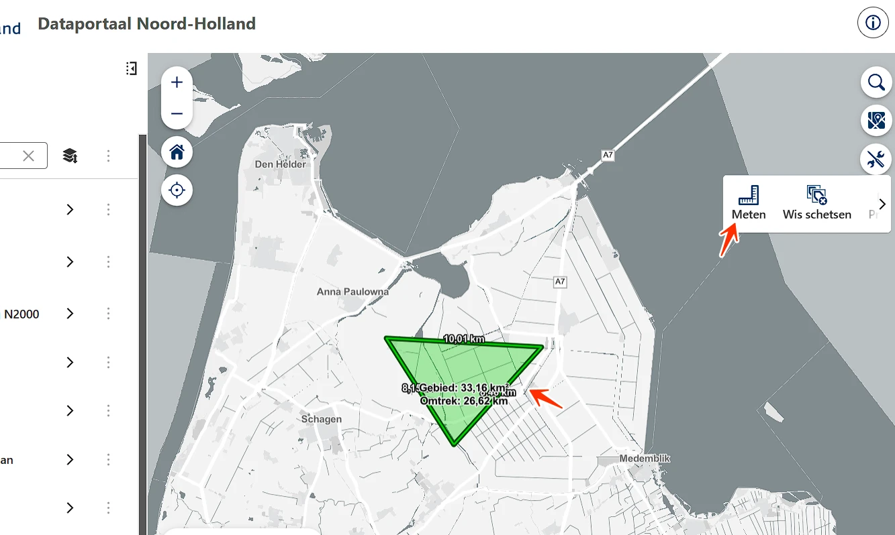
Link naar pagina: https://energietransitie-noord-holland.hub.arcgis.com/pages/energienetwerk
#21 - Alleen kleur gebruikt in legenda bij kaart
Op deze pagina wordt op de kaart alleen kleur gebruikt om informatie over te brengen. Zie het groen op de kaart. Alleen als je de kleuren kunt zien en van elkaar kunt onderscheiden, zie je welk gebied bij welke categorie in de legenda hoort. Hetzelfde probleem doet zich voor op de pagina https://provincie-noord-holland.dataplatform.nl/#/data/ef7bc793-b572-43e4-a8ba-4826d543fcc3.
Oplossing:
Gebruik naast kleur bijvoorbeeld ook verschillende soorten arcering of datalabels in tekst.
#22 - Kleurcontrast tussen lijnen of balken in legenda is niet voldoende
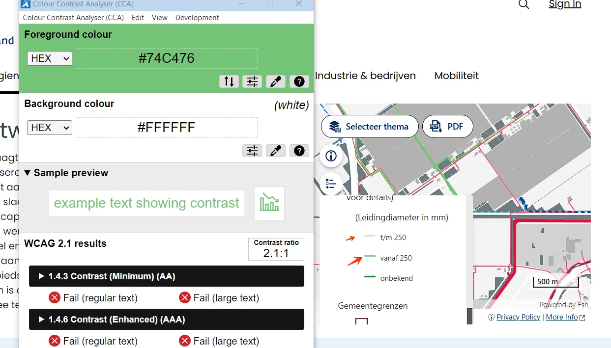
Op deze pagina staat een kaart zonder een tekstalternatief. Deze kaart is niet bedoeld voor navigatie en valt daardoor onder de uitzondering van de wet. Overheidsorganisaties hoeven kaarten en kaarttoepassingen niet toegankelijk te maken als ze niet nodig zijn voor navigatie. Er is echter één uitzondering op deze regel: de informatie die op de kaart wordt getoond, moet ook in tekst op de pagina staan.
Oplossing:
Zorg dat de informatie die met de kaart wordt overgedragen, ook in tekst op de pagina voorkomt.
Link naar pagina: https://apps.vertigisstudio.eu/web/?app=731375317f8b467da75e5666f49bd884 Geen nieuwe bevindingen.
Link naar pagina: https://energietransitie-noord-holland.hub.arcgis.com Geen nieuwe bevindingen.
Link naar pagina: https://pplg-noord-holland.hub.arcgis.com Geen nieuwe bevindingen.
Link naar pagina: https://wonen-noord-holland.hub.arcgis.com
strong-element in plaats van kop-element
Op deze pagina is de volgende tekst onjuist opgemaakt met strong in plaats van met een juist kop-element: “Wonen”. Het strong-element is niet bedoeld om koppen mee te markeren. Dat moet altijd met een kop-element, zoals h2. Koppen gebruik je om een tekst te structureren. Alleen als je ze als kop markeert met een kop-element, begrijpt hulpsoftware die betekenis. Het strong-element gebruik je wanneer je nadruk wilt geven aan enkele woorden of een zinsdeel. Hetzelfde probleem doet zich voor op de pagina https://pplg-noord-holland.hub.arcgis.com bij “PPLG”, op de pagina https://energietransitie-noord-holland.hub.arcgis.com bij “Klimaat & Energie” en op andere pagina’s.
Oplossing:
Verwijder het strong-element en gebruik de juiste kop-elementen om deze koppen te markeren, zoals h2 of h3.
#23 - Logo heeft geen tekstalternatief (alt-attribuut ontbreekt)
Het logo bovenaan de website, dat is geïmplementeerd met een img-element, mist een alt-attribuut. Hierdoor lezen schermlezers nu de bestandsnaam voor, en dat is niet de bedoeling. Informatieve afbeeldingen zoals een logo moeten altijd een alt-tekst hebben. In die alt-tekst moet de volledige tekst staan die in het logo te zien is. Zo weten bezoekers die het plaatje niet kunnen zien, ook wat er staat. Dit probleem heeft ook betrekking op succescriterium 4.1.2, omdat de link geen toegankelijke naam heeft; op succescriterium 2.4.4, omdat de link geen doel heeft; en op succescriterium 2.5.3, omdat de zichtbare tekst niet in een toegankelijke naam voorkomt en de link niet met spraak kan worden bediend. Hetzelfde probleem doet zich voor op de pagina https://wonen-noord-holland.hub.arcgis.com/pages/totaalbeeld, op de pagina https://pplg-noord-holland.hub.arcgis.com/, op de pagina https://pplg-noord-holland.hub.arcgis.com/pages/natuur-en-stikstof en op andere pagina’s.
Oplossing:
Voeg een alt-tekst toe die de volledige tekst van het logo bevat.
#24 - Logo heeft geen alternatieve tekst
Op deze pagina staat in de footer een logo met de zichtbare tekst “Provincie Noord-Holland”, maar dit logo heeft geen tekstalternatief.
Als het alt-attribuut van een afbeelding leeg is (alt=""), negeren schermlezers de afbeelding. Door de alt-tekst niet in te vullen, geef je eigenlijk aan: deze afbeelding is puur decoratief en bevat geen informatie. Er wordt dan dus niets voorgelezen. Daarom moet je informatieve afbeeldingen, zoals een logo, altijd een alt-tekst geven.
Hetzelfde probleem doet zich voor op de pagina https://wonen-noord-holland.hub.arcgis.com/pages/totaalbeeld, op de pagina https://pplg-noord-holland.hub.arcgis.com/, op de pagina https://pplg-noord-holland.hub.arcgis.com/pages/natuur-en-stikstof en op andere pagina’s.
Oplossing:
Voeg een alt-tekst toe die de volledige tekst van het logo bevat.
#25 - Primaire taal is Engels, maar pagina is in het Nederlands
De primaire taal van deze pagina is onjuist ingesteld op Engels (lang="en-US"), terwijl de inhoud van de pagina zelf in het Nederlands is.
Schermlezers gebruiken de taalcode om de juiste uitspraakregels toe te passen. Staat hier een verkeerde code, dan wordt de inhoud van de pagina dus met onjuiste uitspraakregels voorgelezen. De voorgelezen tekst is dan erg lastig te begrijpen.
Hetzelfde probleem doet zich voor op de pagina https://wonen-noord-holland.hub.arcgis.com/pages/totaalbeeld, op de pagina https://pplg-noord-holland.hub.arcgis.com/, op de pagina https://pplg-noord-holland.hub.arcgis.com/pages/natuur-en-stikstof en op andere pagina’s.
Oplossing:
Stel de primaire taal van de pagina in op Nederlands, door het lang-attribuut te veranderen in lang=”nl”. Hierdoor zullen schermlezers de juiste uitspraakregels toepassen.
#26 - Mobiel menu werkt niet goed met toetsenbordfocus
De menuknop staat bovenaan de pagina. Deze knop opent een mobiel menu. Op dit moment kunnen bezoekers met het toetsenbord uit het mobiele menu navigeren. De toetsenbordfocus verplaatst zich dan naar de onderliggende pagina, terwijl het menu geopend blijft. Bij dit soort menu’s moet de toetsenbordfocus goed worden ingesteld. Wanneer het menu actief is, moet de focus binnen het menu blijven en mag deze niet op de onderliggende pagina terechtkomen. Dit kan worden opgelost door de focus binnen het menu te houden, totdat de bezoeker op de sluitknop heeft geklikt of op de ESC-toets heeft gedrukt. Het is ook mogelijk om het menu automatisch te sluiten zodra de toetsenbordfocus eruit gaat. Hetzelfde probleem doet zich voor op de pagina https://wonen-noord-holland.hub.arcgis.com/pages/totaalbeeld, op de pagina https://pplg-noord-holland.hub.arcgis.com/, op de pagina https://pplg-noord-holland.hub.arcgis.com/pages/natuur-en-stikstof en op andere pagina’s.
Oplossing:
Zorg ervoor dat de focus in het menu blijft totdat de bezoeker dit sluit door op de sluitknop te klikken of de ESC-toets in te drukken. Je kunt het menu ook automatisch sluiten als de focus het menu verlaat.
#27 - Elementen die toetsenbordfocus krijgen zijn bedekt door een mobiel menu
De menuknop staat bovenaan de pagina. Wanneer deze knop een mobiel menu opent, overlapt het menu interactieve elementen op de onderliggende pagina. Deze onderliggende elementen kunnen nog steeds toetsenbordfocus krijgen, ook al worden ze door het menu verborgen. Elementen die toetsenbordfocus krijgen, moeten altijd zichtbaar zijn. Is dat niet zo, dan kunnen bezoekers die met het toetsenbord of de schermlezer navigeren in de war raken. Hetzelfde probleem doet zich voor op de pagina https://wonen-noord-holland.hub.arcgis.com/pages/totaalbeeld, op de pagina https://pplg-noord-holland.hub.arcgis.com/, op de pagina https://pplg-noord-holland.hub.arcgis.com/pages/natuur-en-stikstof en op andere pagina’s.
Oplossing:
Je lost dit op een van de volgende manieren op:
- Houd de focus binnen het menu: zorg dat de toetsenbordfocus binnen het menuvenster blijft totdat de bezoeker op de sluitknop heeft geklikt of op de ESC-toets heeft gedrukt.
- Sluit het chatvenster automatisch: sluit het menuvenster automatisch op het moment dat de focus eruit gaat. Het is cruciaal dat onderliggende interactieve elementen geen toetsenbordfocus krijgen zolang het mobiele menu open is.
#28 - Onzichtbaar element krijgt toetsenbordfocus
Op deze pagina komt de toetsenbordfocus terecht op een onzichtbaar interactief element na de link “Data”. De toetsenbordfocus mag niet terechtkomen op onzichtbare interactieve elementen (links, knoppen, formuliervelden). Als dat wel gebeurt, kan een bezoeker ze onbedoeld activeren. Hetzelfde probleem doet zich voor op de pagina https://energietransitie-noord-holland.hub.arcgis.com/ na de link “Mobiliteit”.
Oplossing:
Zorg dat alleen elementen die zichtbaar zijn toetsenbordfocus kunnen krijgen en dat de focusvolgorde logisch is.
#29 - De accordion heeft geen koppen of de rol van kop is overschreven
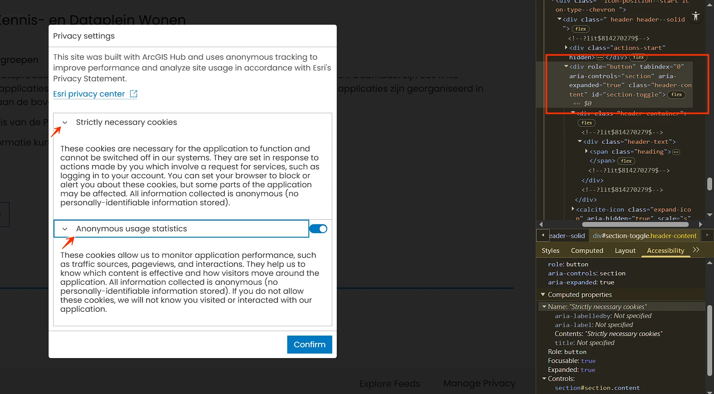
Op deze pagina verschijnt op een klein scherm de knop “Kennis- en Dataplein Wonen”, die een submenu lijkt te openen. De knop geeft geen informatie over de status van het submenu (geopend of gesloten) aan bezoekers die het niet kunnen zien, zoals mensen die schermlezers gebruiken. Hetzelfde probleem doet zich voor op de pagina https://wonen-noord-holland.hub.arcgis.com/pages/totaalbeeld, op de pagina https://pplg-noord-holland.hub.arcgis.com/, op de pagina https://pplg-noord-holland.hub.arcgis.com/pages/natuur-en-stikstof en op andere pagina’s.
Oplossing:
Voeg bijvoorbeeld een tekstuele uitleg toe (ingeklapt/uitgeklapt) die je voor ziende bezoekers met CSS verbergt. Of gebruik het aria-expanded-attribuut. Dit attribuut moet de waarde "true" krijgen als het menu getoond wordt, en “false" als het menu verborgen is.
Link naar pagina: https://energietransitie-nh.incijfers.nl/mosaic/klimaat-en-energie/kerncijfers
#30 - Alleen kleur gebruikt in legenda bij grafiek
Op deze pagina wordt in grafieken en diagrammen alleen kleur gebruikt om informatie over te brengen. Zie het geel in de legenda. Alleen als je de kleuren kunt zien en van elkaar kunt onderscheiden, zie je welke balk of lijn bij welke categorie in de legenda hoort. Hetzelfde probleem doet zich voor op de pagina https://energietransitie-nh.incijfers.nl/mosaic/klimaat-en-energie/transitiepaden/mobiliteit.
Oplossing:
Gebruik naast kleur bijvoorbeeld ook verschillende soorten arcering of datalabels in tekst.
#31 - Kleurcontrast tussen lijnen of balken in grafiek is niet voldoende
Op deze pagina staan grafieken. Sommige kleurcombinaties hebben onvoldoende contrast. Zo heeft geel (#FAB000) op wit een contrastratio van 1,9:1.
Hetzelfde probleem doet zich voor op de pagina https://energietransitie-nh.incijfers.nl/mosaic/klimaat-en-energie/transitiepaden/mobiliteit.
Oplossing:
Zorg dat het contrast tussen informatieve elementen van een grafiek minimaal 3,0:1 is, zodat bezoekers ze van elkaar kunnen onderscheiden. Controleer of alle kleuren in de grafiek voldoende contrast hebben.
#32 - Alternatieve tekst zorgt voor herhaling van tekst
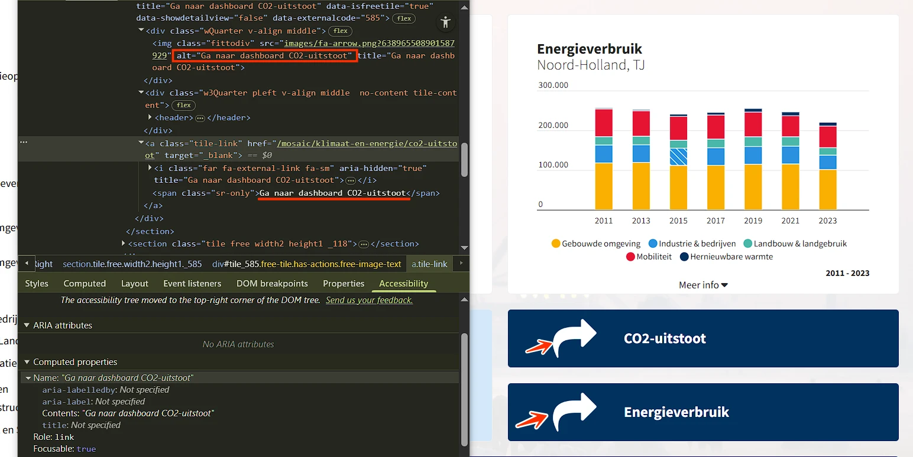
Op deze pagina staat lichtblauwe tekst (#2991E0) “provinciale Klimaat- en Energieverkenning” op een grijze achtergrond (#F0F0F0). De contrastratio is te laag: 3:1.
Oplossing:
Deze tekst is kleiner dan 24px en niet vetgedrukt, daarom moet het contrast minimaal 4,5:1 zijn. Op deze pagina staat een instructie die uitlegt hoe je kleurcontrast kunt testen: https://properaccess.nl/hoe-test-ik-kleurcontrast/.
#33 - De grafische elementen hebben geen tekstalternatieven
Deze pagina bevat interactieve afbeeldingen. Niet alle afbeeldingen hebben tekstalternatieven. Hetzelfde probleem doet zich voor op pagina https://energietransitie-nh.incijfers.nl/mosaic/klimaat-en-energie/transitiepaden/mobiliteit.
Oplossing:
Zorg ervoor dat de informatie die in de grafieken wordt weergegeven ook in tekst op de pagina wordt weergegeven.
#34 - Niet alle functies zijn toegankelijk met het toetsenbord
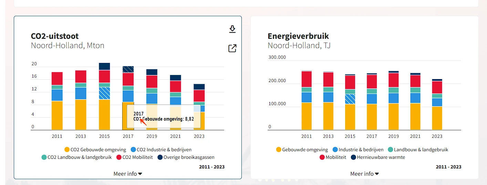
Wanneer deze pagina wordt bekeken met een schermresolutie van 1280 bij 1024 pixels en ingezoomd tot 200%/400%, verschijnt er een schuifbalk en raakt tekst, bijvoorbeeld “De grafieken op deze pagina … regio selecteren”, gedeeltelijk uit beeld. Horizontaal scrollen is niet toegestaan, ook niet als de viewport is ingesteld of ingezoomd op 320 CSS-pixels breed (voor verticale inhoud) of 256 CSS-pixels hoog (voor horizontale inhoud). Zorg ervoor dat de tekst binnen het scherm past. Alleen als scrollen in beide richtingen echt nodig is voor de betekenis of het gebruik van de inhoud mag het wel. Uitzonderingen zijn tabellen, betekenisvolle afbeeldingen en kaarten. Deze moeten leesbaar blijven, dus binnen deze elementen mag je wel scrollen. Hetzelfde probleem doet zich voor op de pagina https://energietransitie-nh.incijfers.nl/mosaic/klimaat-en-energie/transitiepaden/mobiliteit.
Oplossing:
Controleer of het horizontaal scrollen nodig is. Als dit niet zo is, zorg dan dat horizontaal scrollen niet mogelijk is bij inzoomen.
Link naar pagina: https://energietransitie-nh.incijfers.nl/mosaic/klimaat-en-energie/transitiepaden/mobiliteit Geen nieuwe bevindingen.
Link naar pagina: https://pplg-noord-holland.hub.arcgis.com/pages/natuur-en-stikstof Geen nieuwe bevindingen.
Link naar pagina https://energietransitie-nh.incijfers.nl/mosaic/klimaat-en-energie Link naar PDF https://www.noord-holland.nl/bestanden/pdf/Noord-Hollandse Klimaataanpak_versie september 2024.pdf
#35 - Structuur van pdf-document is niet in codes vastgelegd
Dit pdf-document mist codering, waardoor de inhoud niet toegankelijk is voor schermlezers. Bovendien kunnen wij de pdf hierdoor niet volledig onderzoeken. Het gaat om alle succescriteria die met de pdf-codelaag te maken hebben, zoals semantische koppen en alternatieve teksten bij afbeeldingen. Als je dit oplost, is het dus mogelijk dat er nieuwe toegankelijkheidsproblemen ontstaan die nu nog niet aan het licht zijn gekomen.
Oplossing:
Voeg codes toe aan het document die de structuur van het document weergeven. Opslaan als getagde PDF in Word (Windows) Ga naar Bestand. Kies Opslaan als Adobe PDF (als je Acrobat hebt) of ga naar Meer → Exporteren → PDF/XPS-document maken. In het venster dat opent, klik je op Opties. Zet een vinkje bij Documentstructuurtags voor toegankelijkheid en bij Bladwijzers maken met koppen. Op deze manier kunnen gebruikers met het toetsenbord snel van sectie naar sectie springen. Dit werkt alleen als je echte kopstijlen hebt gebruikt. Opslaan als getagde PDF in Word (Mac) Ga naar Bestand → Opslaan als, kies PDF in het keuzemenu en selecteer Best voor elektronische distributie en toegankelijkheid (maakt gebruik van Microsoft online service). Op Mac worden bladwijzers automatisch gemaakt vanuit de koppen, daar hoef je niets voor in te stellen.
#36 - PDF-document heeft geen titel
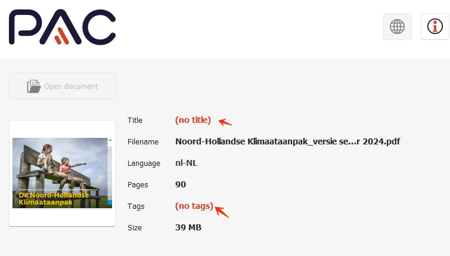
- Open het pdf-document in Adobe Acrobat.
- Ga naar Bestand > Eigenschappen.
- Ga naar het tabblad Beschrijving.
- Vul in het veld Titel een beschrijvende titel in, bijvoorbeeld: "Rapport: Bevolkingscijfers 2023".
- Klik op OK en sla het bestand op.
#37 - Kleurcontrast van kleine tekst is te laag
In dit pdf-document staat lichtblauwe tekst (#0093D6) op een witte achtergrond, bijvoorbeeld “Voorwoord”. De contrastratio is te laag: 3,4:1.
Hetzelfde probleem doet zich voor bij gele tekst (#FFCC00) op een witte achtergrond, bijvoorbeeld wanneer je over “Voorwoord” beweegt. De contrastratio is te laag: 1,5:1.
Oplossing:
Zorg dat het contrast minimaal 4,5:1 is.
#38 - Alleen kleur gebruikt in legenda bij grafiek
In dit pdf-document, bijvoorbeeld op pagina 15, 18 en andere, staan grafieken. Kleur wordt gebruikt om informatie over te brengen. Zie de legenda en de balken in de grafiek. Alleen mensen die de kleuren kunnen zien en van elkaar kunnen onderscheiden zien welke balk / lijn bij welke categorie in de legenda hoort. Dit kan opgelost worden door naast kleur bijvoorbeeld ook verschillende soorten arcering te gebruiken.
Oplossing:
Gebruik naast kleur bijvoorbeeld ook verschillende soorten arcering.
#39 - Kleurcontrast tussen lijnen of balken in grafiek is niet voldoende
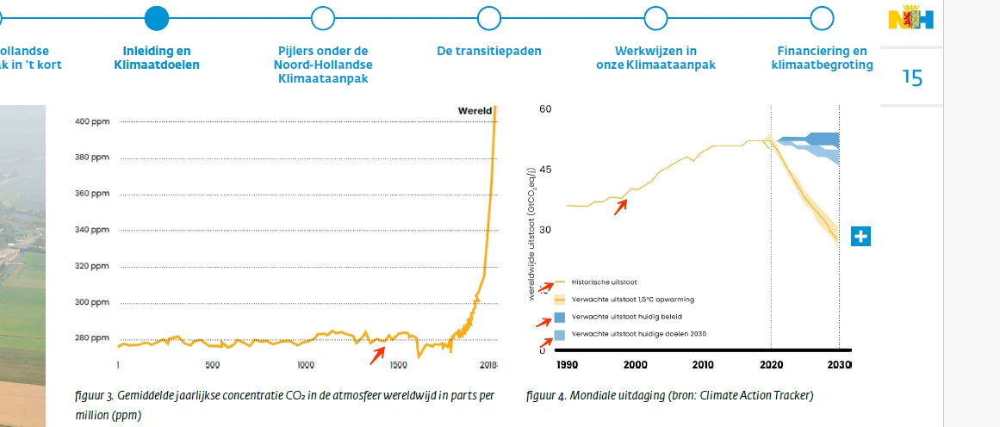
In dit pdf-document staat lichtblauwe tekst (#0093D6) op een lichtgele achtergrond (#FFE07D), bijvoorbeeld op pagina 23 bij de tekst “PRINCIPES”. Het contrast is 1,9:1.
Hetzelfde probleem doet zich voor bij lichtblauwe tekst (#0093D6) op een lichtroze achtergrond (#FFF5D8). De contrastratio is 3,1:1.
Voor kleine tekst moet het contrast minimaal 4,5:1 zijn, en voor grote tekst minimaal 3,0:1.
Oplossing:
Zorg ervoor dat het contrast minimaal 4,5:1 is voor kleine tekst en minimaal 3,0:1 voor grote tekst.
Link naar pagina: https://wonen-noord-holland.hub.arcgis.com/pages/totaalbeeld
#40 - Informatie over de huidige link wordt niet correct bijgewerkt
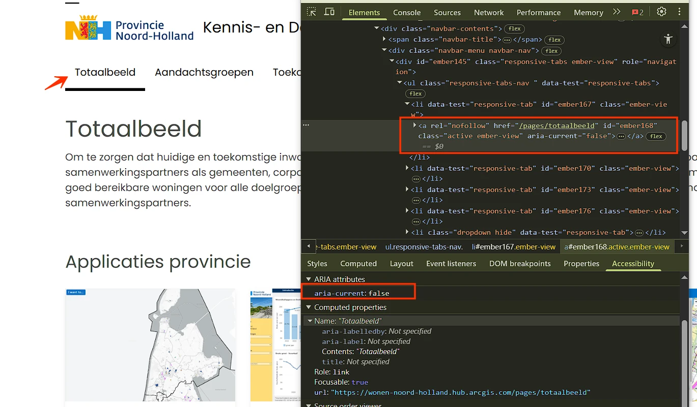
Op deze pagina, onder “Onderzoeken & rapporten”, in de secties met verborgen inhoud, zijn de elementen waarmee je de inhoud kunt openen en sluiten niet opgemaakt als kop, bijvoorbeeld “Rapportage Bouwambassadeur. Storm op komst: samenwerking voorop!”. De teksten waarmee je delen van een accordeon kunt in- en uitklappen, fungeren als koppen voor die delen. Daarom moeten deze teksten ook de rol van kop hebben. Het gaat mis als deze teksten in de code niet als kop zijn gemarkeerd met een h-element, zoals h2 of h3. Hetzelfde probleem doet zich voor op de pagina https://energietransitie-noord-holland.hub.arcgis.com/pages/energienetwerk onder “Onderzoeken & rapporten”.
Oplossing:
Markeer deze teksten als kop of zorg dat de bestaande rol van kop niet wordt overschreven. Meer informatie over dit element staat op deze pagina: https://www.w3.org/WAI/ARIA/apg/patterns/accordion/.
#41 - Knoppen met dezelfde tekst hebben een andere functie
Op deze pagina staan meerdere knoppen met dezelfde toegankelijke naam: “Share this card”. Deze knoppen voeren echter verschillende functies uit. Je kunt met deze knoppen een andere actie uitvoeren. Dit kan verwarrend zijn voor bezoekers met een schermlezer, omdat het niet duidelijk is welke actie elke knop uitvoert. Hetzelfde probleem doet zich voor op de pagina https://pplg-noord-holland.hub.arcgis.com/pages/natuur-en-stikstof en op de pagina https://energietransitie-noord-holland.hub.arcgis.com/pages/energienetwerk.
Oplossing:
Zorg dat de tekst past bij de actie van de knop, zodat knoppen met verschillende functies ook verschillende knopteksten hebben.
#42 - Toetsenbordfocus komt niet op een logische plek nadat dialoogvenster is gesloten
Op deze pagina openen de knoppen met de tekst “Share this card” een dialoogvenster. Na het sluiten van het dialoogvenster keert de toetsenbordfocus niet terug naar het element dat het venster heeft geopend of naar het volgende logische element in de focusvolgorde van de pagina. Hetzelfde probleem doet zich voor op de pagina https://pplg-noord-holland.hub.arcgis.com/pages/natuur-en-stikstof en op de pagina https://energietransitie-noord-holland.hub.arcgis.com/pages/energienetwerk.
Oplossing:
Zorg dat de focus na het sluiten van het venster terechtkomt op het element waarmee het dialoogvenster werd geopend.
#43 - Informatie is niet meer leesbaar als tekstafstand wordt aangepast
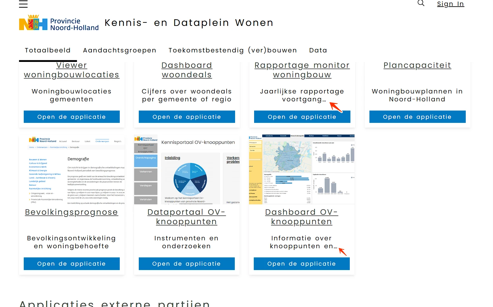
Link naar pagina: https://provincie-noord-holland.dataplatform.nl/#/data/d8b3d41e-104c-4448-8975-e50323d7deb2
#44 - Kop is niet gemarkeerd als koptekst
Op deze pagina zijn de volgende teksten niet opgemaakt als koppen: “Tags”, “Statistieken”. Bezoekers die hulpsoftware gebruiken hebben niets aan een (tussen)kop die er wel uitziet als kop, maar niet als kop is gemarkeerd. Via de koppen op een pagina kunnen gebruikers van hulpsoftware de inhoud scannen of snel naar een bepaalde sectie springen. Maar dat kan alleen als de kop ook echt in de code staat. Als koppen alleen visueel als kop zijn vormgegeven (bijvoorbeeld vetgedrukt), ontstaat bovendien nog een ander probleem: de structuur van de informatie in de code wijkt dan af van de visuele structuur. Hetzelfde probleem doet zich voor op de pagina https://provincie-noord-holland.dataplatform.nl/#/data/ef7bc793-b572-43e4-a8ba-4826d543fcc3.
Oplossing:
Dit voorkom je door koppen altijd te markeren met het juiste HTML-element, op het juiste kopniveau: h1, h2, h3, h4, h5 of h6. Meestal kun je het kopniveau kiezen via de content-editor in je CMS. De HTML-code voor de kop wordt dan automatisch toegepast.
Op deze pagina staat een instructie hoe je zelf koppen op een webpagina kunt testen: https://properaccess.nl/zo-controleer-je-de-koppenstructuur-van-je-website/.
#45 - De accordion heeft geen koppen of de rol van kop is overschreven
Op deze pagina zijn er secties met verborgen inhoud, bijvoorbeeld “Beschrijving”. De elementen waarmee je deze verborgen inhoud kunt openen en sluiten, zijn niet opgemaakt als kop.
Hetzelfde probleem doet zich voor op het tabblad “Kaart”, bijvoorbeeld bij “WMS Services”.
De teksten waarmee je delen van een accordeon kunt inklappen en uitklappen, doen dienst als koppen voor die delen. Daarom moeten deze teksten ook de rol van kop hebben. Het gaat verkeerd als deze teksten niet in de code als kop zijn gemarkeerd met een h-element zoals h2 of h3.
Hetzelfde probleem doet zich voor op de pagina https://provincie-noord-holland.dataplatform.nl/#/data/ef7bc793-b572-43e4-a8ba-4826d543fcc3.
Oplossing:
Markeer deze teksten als kop of zorg dat de bestaande rol van kop niet wordt overschreven. Meer informatie over dit element staat op deze pagina: https://www.w3.org/WAI/ARIA/apg/patterns/accordion/.
#46 - Contrast tussen focusindicator en achtergrond is te laag
Op deze pagina zijn er secties met verborgen inhoud, bijvoorbeeld “Beschrijving”. Wanneer deze secties de toetsenbordfocus krijgen, is dat zichtbaar door een lichtgrijze toetsenbordfocusrand (#F2F2F2). De contrastratio tussen de toetsenbordfocusrand en de witte achtergrond (#FCFCFC) is 1,1:1.
Momenteel is het voor mensen met een visuele beperking of kleurenblindheid lastig of zelfs onmogelijk om de focus te zien.
Hetzelfde probleem doet zich voor op de pagina https://provincie-noord-holland.dataplatform.nl/#/data/ef7bc793-b572-43e4-a8ba-4826d543fcc3.
Oplossing:
Gebruik voor de focusindicator een kleur met een contrast van minimaal 3,0:1 met de achtergrond.
#47 - Contrast tussen focusindicator en achtergrond is te laag
Op deze pagina zijn er tabbladen, bijvoorbeeld “Informatie”. Wanneer deze tabbladen de toetsenbordfocus krijgen, is dat zichtbaar door een lichtblauwe toetsenbordfocusrand (#E6F4FA). De contrastratio tussen de toetsenbordfocusrand en de witte achtergrond (#FCFCFC) is 1,1:1.
Momenteel is het voor mensen met een visuele beperking of kleurenblindheid lastig of zelfs onmogelijk om de focus te zien.
Hetzelfde probleem doet zich voor op de pagina https://provincie-noord-holland.dataplatform.nl/#/data/ef7bc793-b572-43e4-a8ba-4826d543fcc3.
Oplossing:
Gebruik voor de focusindicator een kleur met een contrast van minimaal 3,0:1 met de achtergrond.
#48 - Alleen kleurverschil bij toetsenbordfocus, met te laag contrast
Op deze pagina zijn er tags, bijvoorbeeld “ruimtegebruik”. Op deze tags wordt een aangepaste toetsenbordfocusindicator gebruikt die zichtbaar is als een verandering van lichtgrijs naar donkergrijs. Hetzelfde probleem doet zich voor op het tabblad “Kaart” in de sectie met verborgen inhoud, bijvoorbeeld “WMS Services”. Hetzelfde probleem doet zich ook voor op het tabblad “Kaart” bij de knop “Share”. Het gebruik van alleen kleur om focus aan te geven is hier echter niet voldoende. Voor bezoekers met een visuele beperking of kleurenblindheid is zo’n subtiele kleurverandering vaak niet duidelijk genoeg. En ook mensen die met het toetsenbord navigeren moeten goed kunnen zien op welke plek van de pagina ze zijn. Daarvoor moet er een duidelijk zichtbare focusindicator zijn. Hetzelfde probleem doet zich voor op de pagina https://provincie-noord-holland.dataplatform.nl/#/data/ef7bc793-b572-43e4-a8ba-4826d543fcc3.
Oplossing:
Je kunt hiervoor het beste een extra visuele aanduiding toevoegen. Denk aan een dikkere rand, een onderstreping of een verandering van achtergrond.
#49 - Contrast tussen focusindicator en achtergrond is te laag
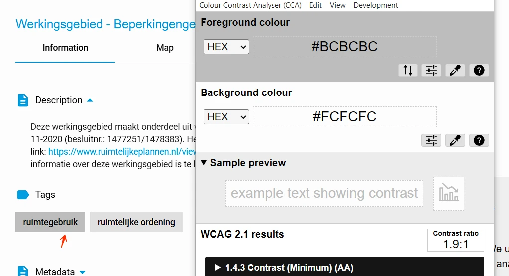
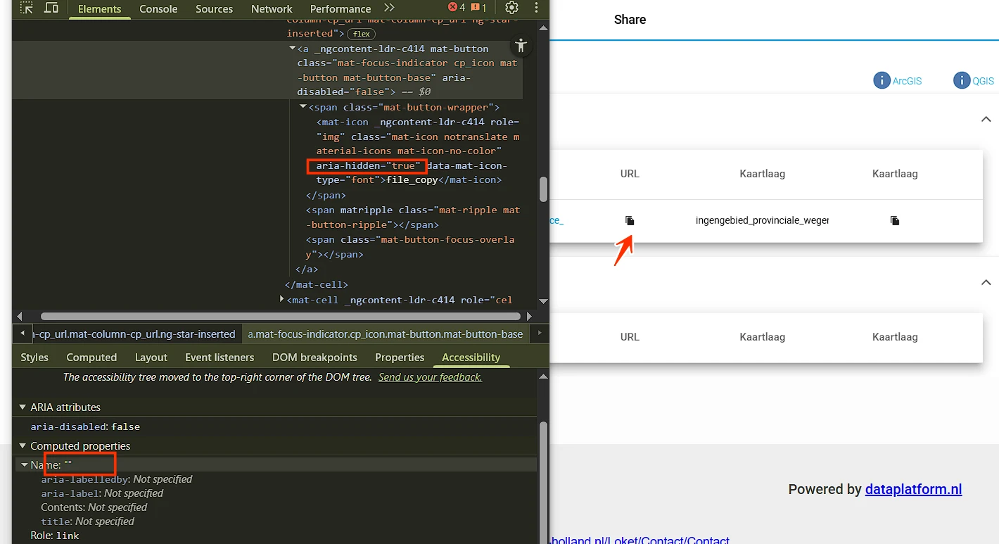
Op deze pagina staan in het tabblad “Kaart”, in de sectie met verborgen inhoud “WMS Services”, links met bestandspictogrammen. Deze links zijn niet toegankelijk met het toetsenbord. Wanneer een bezoeker met het toetsenbord navigeert, wordt deze link overgeslagen. Alle interactieve elementen, dus ook links, moeten met alleen het toetsenbord te bedienen zijn. Hetzelfde probleem doet zich voor op de pagina https://provincie-noord-holland.dataplatform.nl/#/data/ef7bc793-b572-43e4-a8ba-4826d543fcc3.
Oplossing:
Zorg dat alle links met de Enter-, Return- of spatietoetsen kunnen worden bediend.
#50 - Naam van de knop beschrijft niet wat de knop doet
Op deze pagina staat in het tabblad “Kaart” een knop om de kaart in de volledigeschermmodus weer te geven. De toegankelijke naam “⤢” beschrijft de functie niet nauwkeurig. Hetzelfde probleem doet zich voor bij de knop met het “i”-pictogram. Een blinde bezoeker weet daardoor niet wat deze knop precies doet. Hetzelfde probleem doet zich voor op de pagina https://provincie-noord-holland.dataplatform.nl/#/data/ef7bc793-b572-43e4-a8ba-4826d543fcc3.
Oplossing:
Voeg tekst toe die deze knop goed beschrijft.
#51 - Invoervelden voor persoonlijke gegevens hebben geen autocomplete-attribuut
Op deze pagina staat in het tabblad “Contact” een formulier. Dit formulier bevat invoervelden voor persoonlijke gegevens (zoals e-mailadres en telefoonnummer) maar mist het autocomplete-attribuut.
Invoervelden voor persoonlijke informatie zoals achternaam, e-mailadres of telefoonnummer moeten het autocomplete-attribuut hebben. Hierdoor kunnen browsers en hulpsoftware helpen bij het invoeren. Bijvoorbeeld door de velden al automatisch in te vullen.
Hetzelfde probleem doet zich voor op de pagina https://provincie-noord-holland.dataplatform.nl/#/data/ef7bc793-b572-43e4-a8ba-4826d543fcc3.
Oplossing:
Gebruik het autocomplete-attribuut voor alle velden waar persoonlijke informatie in moet worden gevuld. Op deze pagina vind je meer informatie over autocomplete en welke waardes je verplicht moet gebruiken: https://www.w3.org/Translations/WCAG22-nl/#input-purposes.
#52 - Foutmeldingen hebben te weinig contrast
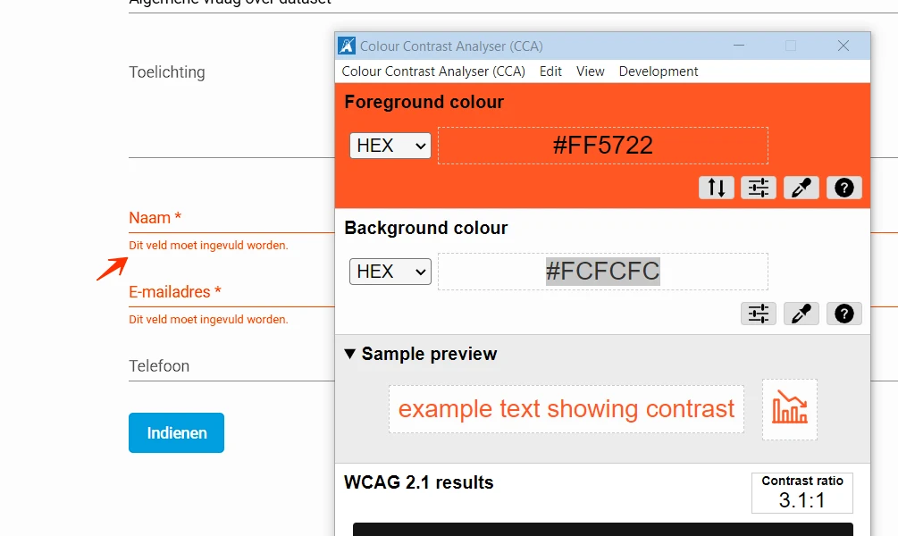
Op deze pagina staat in het tabblad “Contact” een formulier. Het invoerveld “Telefoon” heeft een bijbehorende instructie. Deze instructie is echter niet permanent zichtbaar op de pagina, maar verschijnt alleen in een foutmelding: “Het telefoonnummer is niet correct, gebruik svp 10 cijfers”. Hetzelfde probleem doet zich voor op de pagina https://provincie-noord-holland.dataplatform.nl/#/data/ef7bc793-b572-43e4-a8ba-4826d543fcc3.
Oplossing:
Zorg dat instructies vooraf al zichtbaar en toegankelijk zijn voor alle bezoekers, niet alleen in foutmeldingen. Verplaats de instructie zodat deze permanent zichtbaar is in de buurt van het invoerveld.
#53 - Foutmelding is een instructie in plaats van een uitleg over de fout
Op deze pagina staat in het tabblad “Contact” een formulier. De foutmelding in het formulier toont de tekst “Dit veld moet ingevuld worden”. Dit is een instructie, geen foutmelding. Een goede foutmelding maakt duidelijk dat er een fout is gemaakt, en geeft aan waar de fout zit. Vaak staat er een ontkenning in. Een voorbeeld van een goede foutmelding is: "Het veld is niet (goed) ingevuld". Hetzelfde probleem doet zich voor op de pagina https://provincie-noord-holland.dataplatform.nl/#/data/ef7bc793-b572-43e4-a8ba-4826d543fcc3.
Oplossing:
Pas de foutmelding aan, zodat de bezoeker weet wat er fout is.
#54 - Bij 400% zoom is een horizontale scrollbar aanwezig
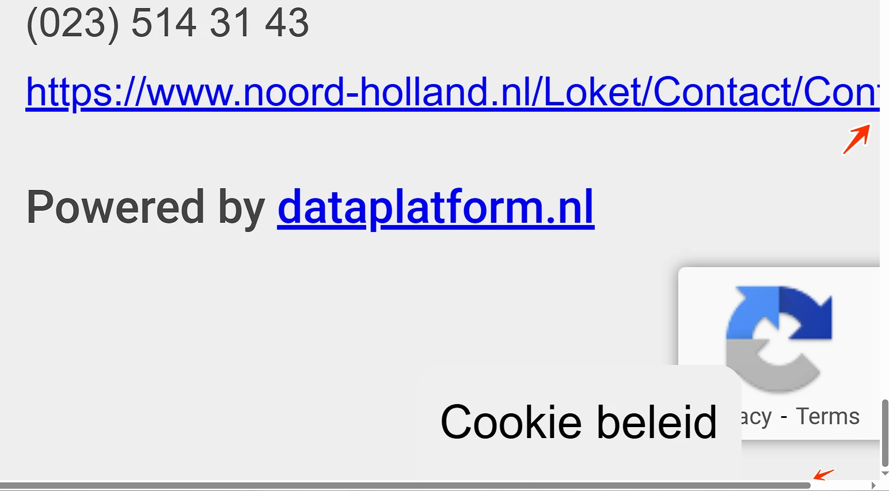
Over dit onderzoek
Leeswijzer
Onze rapporten zijn anders. Bij het bespreken van de gevonden problemen volgen wij niet de structuur van de norm, maar die van jouw website of app. Hierdoor kun je gewoon per pagina of scherm aan de slag gaan. Wel zo makkelijk! Je vindt verderop een overzicht van alle pagina’s met problemen.
We geven je bij elk gevonden issue een paar voorbeelden, maar niet een complete lijst. Controleer zelf of het probleem ook nog op andere plekken voorkomt. Zie het rapport als een leidraad.
Gebruikte norm
Dit onderzoek laat zien in hoeverre de website op dit moment voldoet aan WCAG 2.2, niveau A en AA. WCAG staat voor Web Content Accessibility Guidelines. Dit is de internationale norm voor digitale toegankelijkheid. De Europese norm EN 301 549 bevat alle eisen van WCAG op niveau A en AA.
In dit rapport hebben we korte beschrijvingen van de succescriteria uit de norm opgenomen, met een algemene uitleg erbij. Wil je ze helemaal lezen? Bekijk dan de documentatie van WCAG.
Gebruikte onderzoeksmethode
We gebruiken de onderzoeksmethode WCAG-EM van het W3C. Het proces ziet er als volgt uit:
- vaststellen wat binnen en buiten scope valt
- vaststellen welke technologieën zijn gebruikt
- steekproef (sample) samenstellen
- steekproef onderzoeken
- gevonden issues beschrijven
Het grootste deel van het onderzoek doen we met de hand. Voor een deel van de toegankelijkheidseisen gebruiken we automatische tools als ondersteuning, zoals axe-core en Chrome Developer Tools.
Belangrijk om te weten
Dit rapport helpt je om de toegankelijkheid van je website te verbeteren. Maar let op: het is geen definitieve, volledige lijst van alle aanwezige toegankelijkheidsproblemen. Dat zit zo:
Het is een steekproef
Ten eerste is het onderzoek gebaseerd op een steekproef. Die is op een betrouwbare manier genomen, en de meeste problemen zullen daardoor zeker aan het licht komen. Toch kan een probleem net buiten de steekproef vallen. Bij een volgend onderzoek kan het wel ontdekt worden.
Op basis van falsificatie
We beoordelen vanuit het principe van falsificatie. Dat houdt in dat we proberen te bewijzen dat iets niet waar is, in plaats van te bevestigen dat het klopt. ‘Voldoet’ betekent daarom dat we geen reden hebben gevonden om een punt af te keuren. Maar als we later wél een reden vinden, kan het alsnog worden afgekeurd.
Voortschrijdend inzicht
Het komt voor dat de beoordeling van een succescriterium op detailniveau verandert. De norm beschrijft namelijk niet élk mogelijk scenario. Samen met andere onderzoeksbureaus overleggen we hoe we met bepaalde situaties omgaan. Zo kan iets dat nu wordt afgekeurd, soms bij een volgend onderzoek worden goedgekeurd en andersom.
Oplossen leidt tot nieuw probleem
Ten slotte kan het gebeuren dat bij het oplossen van een probleem onbedoeld een nieuw toegankelijkheidsprobleem ontstaat. Dat komt dan bij een volgend onderzoek pas naar voren.
Hoe werkt dit rapport?
Bevindingen bekijken en filteren
Alle gevonden toegankelijkheidsproblemen staan onder Gevonden problemen. Je kunt de bevindingen filteren op:
- Impact (Groot, Medium, Klein, Advies) — hoe ernstig is het probleem voor de gebruiker?
- Type (Content, Techniek) — moet de inhoud of de techniek worden aangepast?
- Status (Open, Opgelost) — welke problemen zijn al verholpen?
Voortgang bijhouden
Je kunt je voortgang op twee manieren bijhouden:
- CSV-export — exporteer alle bevindingen als CSV-bestand en laad het in een (online) spreadsheet om met je team samen te werken.
- Jira-export — exporteer alle bevindingen als Jira-compatibel CSV-bestand. Importeer het via Jira > Issues > Import issues from CSV. Bevindingen worden aangemaakt als bugs met prioriteit op basis van impact.
- Registreer in de browser — activeer deze optie om per bevinding bij te houden of het is opgelost. Je voortgang wordt opgeslagen in je browser. Niemand anders kan je resultaat zien. Let op: de voortgang is gekoppeld aan je browser. Als je een andere browser of een ander apparaat gebruikt, begint de telling opnieuw.
- Plan van aanpak — download een geprioriteerd plan van aanpak om de gevonden problemen stap voor stap op te lossen. Dit is beschikbaar bij audits vanaf maart 2026.
Link naar een specifieke bevinding delen
Bij elke bevinding verschijnt een link-icoon wanneer je er met de muis overheen gaat. Klik op dit icoon om de directe link naar die bevinding te kopiëren. Je kunt deze link plakken in een e-mail of chatbericht, bijvoorbeeld om een vraag te stellen aan Proper Access over een specifiek punt.